Se encuentra en la región de la torre de Necluda. Tienes que completar la prueba heroica: La estatua maldita para que el santuario aparezca. Si has hablado con Carril tendrás la prueba activa, pero si no es así podrás cumplirla igualmente. Ve al norte de la meseta de Namet y al final del cañón verás un grupo de extrañas estatuas en el suelo. Tienes que disparar una flecha a la estatua que se le iluminan los ojos, sin embargo, esto solo ocurrirá a las 21:00 horas.
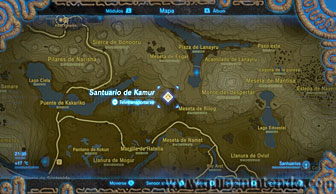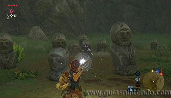
Si estás allí a esa hora y le disparas una flecha de cualquier tipo, completarás la prueba heroica y aparecerá la entrada del santuario.
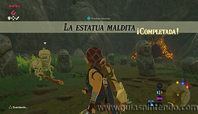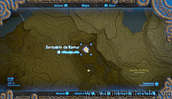
Entra en él y tendrás que recorrer el interior de un gran reloj moviéndote ente engranajes. Lo primero que debes hacer es avanzar hasta poder entrar en la zona de tierra que va girando con cuidado de que no te den las bolas con pinchos que ruedan por ella.
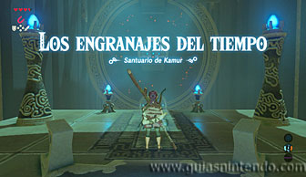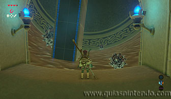
Mantente en el centro para poder subir a una de las plataformas largas (no necesitas hacer nada especial, la gravedad te subirá a ellas). Después avanza sobre ella y salta a la rueda dentada que hay en horizontal. Desde ella verás un cofre en una plataforma más pequeña, espera a que esté a tu alcance para saltar a ella (aunque lo harás en un lateral, no donde está el cofre). Mantente en esa plataforma moviéndote lentamente para no caer mientras va girando, para poder pasar a la cara en donde está el cofre y así abrirlo (contiene una lanza de soldado).
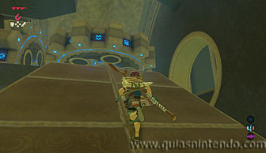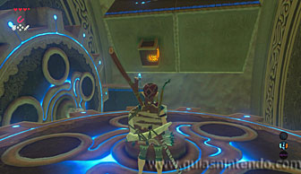
Ahora salta y planea para alcanzar un hueco que hay en la pared. Allí puedes encontrar el segundo cofre (que contiene un Ópalo). Después regresa a la misma sala anterior.
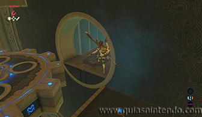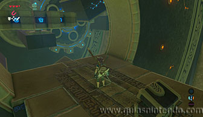
Vuelve a alcanzar la plataforma del cofre, pero ahora sigue dejando que gire (y tu caminando lentamente para no caerte) hasta que se dé la vuelta completamente, así descubrirás unas escaleras.
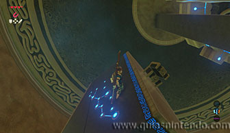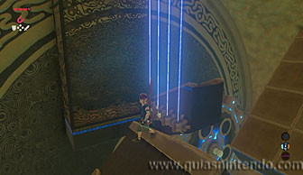
Sube las escaleras cuando coincidan con otro tramo y sigue el único camino que hay hacia el altar. Cuando subas a él podrás examinarlo para obtener un símbolo de valía.
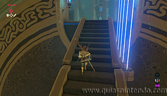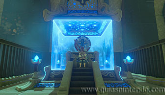